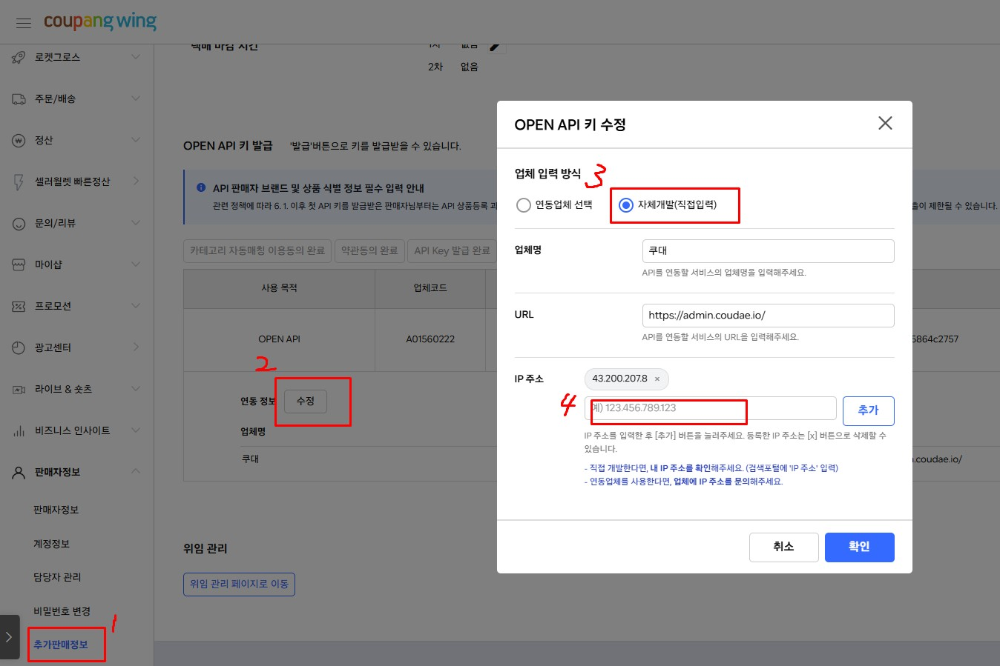

딱 3단계만 따라 하면
오늘 상품이 올라갑니다
순서대로만 하면 됩니다.
단어를 바꿔서 다시 검색해보세요.
ALL8을 쓰려면 크롬 확장프로그램을 먼저 설치해야 해요. 소싱 사이트에서 상품을 담을 때 쓰는 핵심 도구예요. 딱 한 번만 설치하면 계속 써요.
크롬이 없으면 google.com/chrome에서 먼저 설치하세요.
- 크롬으로 all8.io 접속 후 로그인 카카오 계정으로 바로 가입·로그인할 수 있어요.
- 왼쪽 메뉴에서 확장프로그램 다운로드 클릭 크롬 웹스토어로 이동해요.
- 크롬 웹스토어에서 Chrome에 추가 버튼 클릭 "ALL8을(를) 추가하시겠습니까?" 팝업이 뜨면 확장 프로그램 추가 클릭.
- 설치 완료 확인 — 아이콘이 보여야 해요 크롬 오른쪽 위에 🧩 아이콘을 클릭하면 ALL8이 보여요. 아이콘을 클릭해서 로그인하세요.
- 아이콘을 고정해두면 편해요 🧩 클릭 → ALL8 옆에 📌 핀 아이콘 클릭 → 이후부터 주소창 바로 옆에 ALL8 아이콘이 항상 보여요.
확장프로그램이 설치되면 소싱 사이트를 열 때 오른쪽에 ALL8 사이드패널이 자동으로 뜰 수 있어요. 안 뜨면 아이콘을 직접 클릭하면 돼요.
| 상황 | 해결 방법 |
|---|---|
| 사이드패널이 안 열려요 | 크롬 오른쪽 위 ALL8 아이콘 클릭 → "사이드 패널 열기" 선택 |
| 로그인하라고 뜨면 | 사이드패널에서 카카오 로그인하면 됩니다 |
| 아이콘 자체가 없으면 | 🧩 아이콘 클릭 → ALL8 찾아서 핀 고정하면 보여요 |
처음 설치하면 권한 허용 팝업이 뜰 수 있어요. 아래 권한은 ALL8이 소싱 사이트 상품 정보를 읽기 위해 꼭 필요한 것들이에요.
- 모든 사이트의 데이터 읽기/쓰기 → 허용 (소싱 사이트 상품 정보 수집용)
- 사이드 패널 표시 → 허용 (화면 오른쪽 ALL8 패널 표시용)
- 크롬은 확장프로그램을 자동으로 최신 버전으로 업데이트해줘요. 별도로 할 일 없어요.
- 강제 업데이트가 필요하면: 크롬 주소창에
chrome://extensions/입력 → 오른쪽 위 "개발자 모드" ON → 업데이트 클릭
| 문제 | 원인 | 해결 방법 |
|---|---|---|
| "이 상품 수집" 버튼이 안 나와요 | 확장프로그램이 비활성화됐거나 로그인 안 됨 | 아이콘 클릭 → 로그인 확인. chrome://extensions/에서 ALL8 토글 ON 확인. |
| 설치했는데 아이콘이 안 보여요 | 🧩에 숨겨져 있음 | 🧩 아이콘 클릭 → ALL8 옆 📌 핀 클릭하면 항상 보여요 |
| 사이드패널이 갑자기 사라졌어요 | 크롬 업데이트 후 재설정 필요 | ALL8 아이콘 클릭 → "사이드 패널 열기" 다시 선택 |
| 크롬 웹스토어 링크가 없어요 | 배포 심사 중일 수 있음 | all8.io → 확장프로그램 다운로드 페이지에서 최신 링크 확인. 또는 ALL8 말풍선에 문의. |
⚡ 지금 당장 시작하는 법 — 딱 3단계
- all8.io 에 로그인하세요 카카오 계정으로 바로 가입·로그인할 수 있어요.
- 왼쪽 메뉴 → 확장프로그램 다운로드 클릭 → 크롬에 추가 크롬 웹스토어 페이지가 열리면 "Chrome에 추가" 버튼을 누르세요.
- 크롬 오른쪽 위 ALL8 아이콘 클릭 → 카카오 로그인 사이드패널이 열리면 준비 완료예요.
- 알리익스프레스·타오바오 등에서 팔고 싶은 상품 페이지 열기 ALL8 사이드패널에서 이 상품 수집 클릭.
- all8.io → 상품 목록 → 담은 상품 클릭 → 편집 후 업로드 마켓을 선택하고 마켓 업로드 버튼을 누르면 상품이 올라가요!
처음 들어오면 보이는 화면이에요. 지금 내 계정이 어떤 상태인지 한눈에 볼 수 있어요.
| 항목 | 설명 |
|---|---|
| 수집된 상품 | 지금까지 담아온 상품 총 개수 |
| 판매 중인 상품 | 마켓에 현재 올라가 있는 상품 수 |
| 크레딧 잔액 | 서버 수집·AI 기능 사용 시 차감되는 포인트. 부족하면 충전하세요. |
| 재고 연동 중 | 소싱처 품절 여부를 자동으로 감시 중인 상품 수 |
| 업로드 중 | 지금 마켓에 올리고 있는 상품 수 (잠깐 기다리면 완료돼요) |
| 에러 | 뭔가 잘못된 상품 수. 클릭하면 원인을 볼 수 있어요. |
대시보드에 에러 숫자가 표시됐다면 클릭해서 원인을 확인하세요. 에러를 방치하면 상품이 마켓에 올라가지 않아요.
| 에러 유형 | 주요 원인 | 해결 방법 |
|---|---|---|
| 업로드 에러 | 마켓 카테고리 미선택, 필수 항목 누락, API 키 만료 | 상품 클릭 → 편집 화면에서 빨간 항목 확인 → 채운 후 재업로드 |
| 수집 에러 | 소싱 사이트 로그인 필요, 상품 삭제됨, 사이트 구조 변경 | 소싱 사이트에서 해당 상품 페이지 직접 확인. 상품이 없으면 삭제. |
| 재고 연동 에러 | 소싱처 로그인 세션 만료, 소싱 사이트 변경 | 재고 연동 재설정. 타오바오·1688은 주기적으로 재로그인 필요. |
| 마켓 API 에러 | 쿠팡·스마트스토어 API 키 만료 또는 변경 | 마켓 계정 설정에서 API 키를 새로 발급 후 다시 입력. |
- 대시보드에서 크레딧 잔액 확인 잔액이 0에 가까우면 서버 수집과 AI 기능이 중단돼요.
- 왼쪽 메뉴 → 결제 내역 클릭 결제 내역 화면에서 크레딧 충전 버튼을 찾을 수 있어요.
- 크레딧 충전 클릭 → 금액 선택 → 결제 결제 완료 즉시 크레딧이 더해져요.
소싱 사이트에서 팔고 싶은 상품을 ALL8으로 가져오는 단계예요. 방법이 몇 가지 있는데 하나씩 설명할게요.
- 담고 싶은 상품 페이지를 크롬으로 열기 알리익스프레스, 타오바오, 1688, 아마존 등 어디서든 가능해요.
- 오른쪽 ALL8 사이드패널 확인 사이드패널이 안 보이면 브라우저 오른쪽 위 ALL8 아이콘을 클릭하세요.
- 사이드패널에서 이 상품 수집 클릭 10~30초 정도 기다리면 상품 정보를 자동으로 가져와요.
- 카테고리 페이지나 검색 결과 페이지로 이동하세요.
- 각 상품 위에 체크박스가 뜹니다. 원하는 것들을 체크하세요.
- 사이드패널에서 수집 시작을 누르면 선택한 상품이 한꺼번에 담겨요.
확장 프로그램 없이도 링크를 직접 입력해서 상품을 담을 수 있어요.
- URL 직접 입력: 사이드패널 또는 상품 목록 화면에서 + URL로 추가 클릭 → 링크 붙여넣기
- 엑셀 파일로 대량 추가: + 엑셀로 추가 클릭 → URL이 담긴 엑셀/CSV 파일 업로드 → 한 번에 수백 개도 가능해요.
💻 브라우저 수집 (무료)
- 내 크롬이 직접 상품 페이지를 열어서 가져와요
- 크레딧 소모 없음
- 내 컴퓨터가 켜져 있어야 해요
- 처음 시작하는 분께 추천
☁️ 서버 수집 (크레딧 소모)
- ALL8 서버가 대신 가져다줘요
- 컴퓨터 꺼져도 수집돼요
- 더 빠르고 안정적이에요
- 크레딧이 조금 차감돼요
처음엔 브라우저 수집으로 충분해요. 상품이 많아지거나 자동화가 필요할 때 서버 수집을 써보세요.
사이드패널 상단 "가격/재고 연동" 탭에서 관리해요. 소싱처 상품이 품절되거나 가격이 바뀌면 자동으로 감지해요.
| 화면 요소 | 설명 |
|---|---|
| 목록 각 행 | 썸네일 | 상품명(소싱처 링크) | 마지막 확인 시간 | 상태 배지 | "N시간마다 · N회 남음" |
| 상태 배지 | N개 품절 품절 감지 · 옵션 동기화 불가 옵션 구조 변경 · 변경 없음 정상 |
| [재확인] 버튼 | 클릭 시 즉시 해당 상품만 소싱처 재확인. 확인 횟수 차감 없음 (수동 확인은 횟수 면제) |
항목 체크박스 선택 → [계획 수정] 버튼. 여러 개 선택 시 한꺼번에 수정돼요.
| 항목 | 사용법 |
|---|---|
| 확인 주기 | 숫자 + 시간/일 선택. 예: 6 + 시간 → 6시간마다 자동 확인 |
| 총 확인 횟수 | 숫자 입력 (최대 99회). 횟수가 0이 되면 자동 확인 중단. 무한 감시가 필요하면 99로 설정하고 주기적으로 재설정. |
| 수집 방식 | 브라우저 우선 / 서버 우선. 소싱처가 캡차나 로그인이 필요하면 브라우저 우선 선택. |
사이드패널 상단 "수동수집" 탭. 자동 수집이 지원되지 않는 사이트이거나, 특정 이미지만 골라서 직접 상품 정보를 입력하고 싶을 때 써요.
- 수동수집 탭 클릭 → 현재 페이지 이미지 자동 표시 처음 쓰면 "권한 허용하고 이미지 읽기" 버튼이 나와요. 클릭 → 크롬 권한 팝업 → 허용.
- 이미지 클릭해서 선택 파란 테두리 = 선택됨. 선택하면 아래에 "썸네일 / 상세" 버튼이 나타나요. 대표 이미지는 썸네일, 나머지는 상세로 지정하세요.
- 기본 정보 입력 — 상품명은 필수 상품명(필수) · 설명 · 브랜드 · 제조사 · 배송비 입력. 나머지는 선택사항.
- 옵션 설정 (있는 경우만) + 옵션그룹 클릭 → 그룹 이름 입력(예: 색상) → 값 입력 후 Enter(예: 빨강, 파랑). 옵션이 여러 개면 그룹을 추가하면 자동으로 모든 조합(SKU)이 만들어져요.
- 가격 입력 — 모든 SKU에 원가를 입력해야 전송 가능 통화 선택(원/달러/엔/위안 등) + 각 옵션 조합별 원가 · 재고수량 · 판매중/품절 설정.
- "확인 (서버로 전송)" 클릭 ALL8 상품 목록으로 이동하면 성공. 이후 번역·편집·업로드는 일반 수집 상품과 동일하게 진행해요.
사이드패널 오른쪽 위 톱니바퀴(⚙) 버튼을 클릭하면 확장프로그램 설정 화면이 열려요.
| 항목 | 설명 |
|---|---|
| 중복수집 허용 |
꺼짐(기본): 이미 수집한 상품을 다시 담으려 하면 "중복" 표시만 하고 실제 수집은 안 해요. 켜짐: 중복 확인 없이 그냥 수집해요. 같은 상품을 다른 프리셋으로 다시 올릴 때 사용. |
| 소싱 검색 권한 소싱기 필수 |
소싱기에서 발굴 시작 버튼을 누르면 확장프로그램이 네이버 검색을 자동 크롤해요. 이 권한이 없으면 발굴이 아예 안 돼요. "권한 허용" 클릭 → 크롬 팝업 → 허용 으로 한 번만 설정하면 됩니다. |
| 정확 판매데이터 수집 권한 선택 사항 |
소싱기 검토 테이블에서 구매수·재구매수·구매확정 수치를 보려면 이 권한이 필요해요. 없어도 네이버 검색 크롤은 그대로 작동해요. 판매 신호 데이터를 더 정확하게 보고 싶을 때만 켜세요. |
전체 지원 목록은 확장 프로그램 설정(⚙) → 지원 사이트에서 확인하세요.
| 소싱처 | 주의사항 | 팁 |
|---|---|---|
| 타오바오 | 로그인이 필요해요. 비로그인 상태면 수집 안 됨. | 크롬에서 타오바오에 먼저 로그인한 후 수집하세요. 가끔 재로그인 요구. |
| 1688 | 가격이 위안(¥)으로 표시돼요. | 편집 화면에서 원가를 원화로 직접 수정하거나, 환율을 반영해서 입력하세요. |
| 티몰 | 로그인 필요. 일부 상품은 중국 내 배송만 가능. | 상품 상세에서 해외 배송 가능 여부 확인 후 담으세요. |
| 알리익스프레스 | 로그인 없이도 수집 가능. 가장 사용하기 쉬워요. | 배송비가 상품마다 다르므로 원본 링크에서 배송비 꼭 확인. |
| 아마존 | 달러($) 가격. 환율 반영 필요. | 미국 아마존과 일본 아마존 둘 다 지원. 일본은 엔(¥) 단위. |
| 테무 | 가격 변동이 심해요. 수집 시점과 실제 구매 시점 가격 차이 주의. | 업로드 직전에 원본 링크에서 최신 가격 다시 확인하는 습관 권장. |
| 증상 | 원인 | 해결 방법 |
|---|---|---|
| "이 상품 수집" 버튼을 눌러도 아무 반응 없음 | 로그인 안 됨 또는 확장프로그램 비활성화 | 사이드패널에서 로그인 확인. ALL8 아이콘 우클릭 → 관리 → 사용 설정 ON. |
| 수집은 됐는데 상품 정보가 이상함 (이미지 없음, 가격 0원) | 소싱 사이트가 페이지 구조를 바꿈 | ALL8 말풍선에 해당 소싱 사이트 주소 알려주면 지원팀이 업데이트해줘요. |
| 수집 중 "에러 발생" 메시지 | 소싱 사이트 점검 중이거나 네트워크 불안정 | 잠깐 기다렸다가 새로고침 후 재시도. 계속 안 되면 문의. |
| 상품명이 전부 중국어로 나옴 | 번역 프롬프트 오류 또는 AI 크레딧 부족 | 편집 화면에서 직접 번역하거나, 크레딧 충전 후 AI 번역 재시도. |
| 수집했는데 상품 목록에 안 보임 | 수집이 아직 처리 중이거나 필터가 적용됨 | 상품 목록 → "전체" 탭 선택. 처리 중 상태면 잠깐 기다리면 됩니다. |
대량 수집 중에는 절전모드 진입 시간을 길게 설정해두거나 마우스 움직임 유지 프로그램을 사용하세요.
대안: 서버 수집을 쓰면 컴퓨터가 꺼져도 수집이 계속돼요 (크레딧 소모).
ALL8에 담아온 상품들이 모두 여기 있어요. 상태를 보고 편집하거나 업로드하면 됩니다.
| 상태 | 무슨 뜻? | 다음 할 일 |
|---|---|---|
| 📥 수집됨 | 상품을 방금 담았어요. 아직 처리 전이에요. | 잠깐 기다리세요. |
| ⚙️ 처리중 | ALL8이 정보를 가공하고 있어요. | 자동으로 다음 단계로 넘어가요. |
| ✏️ 편집 중 | 사람이 직접 편집 중이에요. | 편집 완료 후 저장하세요. |
| ✅ 수정완료 | 편집이 끝났어요. 업로드 준비 완료. | 마켓 업로드를 누르세요. |
| ⬆️ 업로드 중 | 지금 마켓에 올리고 있어요. | 잠깐 기다리세요. |
| 🟢 판매 중 | 마켓에 올라가 있어요! | 게시된 상품에서 관리하세요. |
| ❌ 에러 | 뭔가 문제가 생겼어요. | 클릭해서 원인 확인 후 재시도하세요. |
- 상품 왼쪽 체크박스를 클릭해서 여러 개를 선택할 수 있어요.
- 전체 선택: 목록 맨 위 체크박스를 클릭하면 현재 페이지 전체가 선택돼요.
- 선택 후 할 수 있는 것: 프리셋 적용 · 마켓 업로드 · 재고 연동 · 삭제
- 상태 필터: 상단 탭(전체/수집됨/편집완료/판매중/에러)으로 상태별로 골라볼 수 있어요.
- 키워드 검색: 상품명으로 검색할 수 있어요.
- 마켓 필터: 특정 마켓에 올라간 상품만 골라볼 수 있어요.
수집된 상품 2개 이상을 선택해 SKU를 합친 혼합구성상품을 만들거나, 스마트스토어 그룹상품 형태로 업로드할 수 있어요. 여러 상품을 묶어 세트·구성 상품으로 판매할 때 사용해요.
2개 이상 선택
"혼합/그룹상품 만들기"
구성 설정
→ 수집 상품에 등록
| 항목 | 설명 |
|---|---|
| 상품명 필수 | 생성될 혼합상품의 이름 |
| 프리셋 | 생성 후 자동 적용할 프리셋. 스마트스토어 그룹상품 설정이 포함된 프리셋을 선택하면 그룹상품 업로드 배지가 표시돼요. 만들기 완료 후 자동으로 프리셋이 적용돼요. |
"옵션값" 하나 = 하나의 묶음 세트. 예: "A상품 1개 + B상품 2개" 구성. 최대 100개까지 추가 가능. 카드 왼쪽 핸들(⠿)로 순서 변경.
| 항목 | 설명 |
|---|---|
| 옵션값 이름 필수 | 이 묶음 구성의 이름. 예: "500ml 2개 세트" |
| SKU 구성 필수 | 선택한 원본 상품별로 그룹이 나뉘어 표시돼요. 체크박스로 SKU 선택 → 수량 스텝퍼([-] N [+]) 활성화. 미선택 시 스텝퍼 비활성. |
| 옵션 이미지 | 이 구성 값의 대표 이미지 1장. 원본 상품들의 이미지를 통합해 선택할 수 있어요. |
| 구성 상세 | 이 묶음에 포함된 상품별 상세이미지를 개별 선택. 미선택 시 업로드 단계에서 공통 상세이미지로 대체돼요. |
| 최대 세트 수 (자동 계산) | 재고가 가장 적은 SKU 기준으로 만들 수 있는 최대 묶음 수. 0세트면 빨간색 경고 표시. |
원본 상품들의 이미지를 역할별로 선택해요.
| 역할 | 상한 | 설명 |
|---|---|---|
| 대표이미지(썸네일) | 1장 | 상품 검색 결과에 표시되는 대표 이미지 |
| 상품이미지(보조썸네일) | 30장 | 상품 상세 페이지 갤러리 이미지 |
| 상세설명이미지 | 200장 | 상품 상세 설명 영역 이미지 |
- [만들기] 클릭 → 다이얼로그 닫힘, 상품 목록에 "처리중" 행 즉시 표시 백그라운드에서 생성이 진행되며, 완료되면 자동으로 정상 행으로 전환돼요.
- 프리셋 선택했으면 자동 적용 생성 완료 후 즉시 프리셋이 적용돼요. 편집 화면 열면 설정이 미리 채워진 상태예요.
- 편집 → 마켓 업로드 완성된 상품은 수집된 상품 목록에 등록돼요. 이후 편집 화면에서 마켓을 연결하고 업로드하면 돼요.
📦 혼합구성 만들기
- 여러 상품 SKU를 묶어 새 상품 생성
- 상품 목록에서 일괄 작업으로 실행
- 마켓 무관 (쿠팡·스마트스토어 모두)
🏪 스마트스토어 그룹상품 업로드
- 이미 만들어진 상품을 SS 그룹상품 형태로 업로드
- 상품 편집 화면 > 부가정보 섹션에서 설정
- 스마트스토어 전용 추가 설정
- 상품 편집 화면 → 부가정보 섹션 → "그룹상품으로 업로드" 체크 카테고리 미선택 시 "카테고리를 먼저 선택하면 그룹상품 가이드를 불러옵니다." 메시지 표시. 카테고리가 그룹상품 미지원이면 체크박스 비활성화.
- 표준 구매 옵션 가이드 선택 스마트스토어 카테고리별 필수 속성 스키마(예: 생수 → "용량", "개수"). ALL8이 자동으로 해당 카테고리 가이드를 조회해서 드롭다운으로 보여줘요.
- 값매핑 그리드에서 각 옵션값별 속성값 입력 각 구성(옵션값)별로 표준 속성값을 입력. 숫자 타입은 단위 포함 필수 (예: "500ml"). 미입력 셀은 경고 표시.
수집된 상품을 클릭하면 편집 화면이 열려요. 화면 오른쪽에 업로드 플로우가 있는데, 위에서 아래로 체크하면서 내려가면 됩니다. 초록 체크 = 완료, 빨간 점 = 반드시 해야 함, 빈 원 = 선택 사항이에요.
이 상품이 어떤 사이트에서 수집된 건지 표시되는 곳이에요. 직접 뭔가 입력하는 곳이 아니라, 정보를 확인하는 곳이에요.
| 표시 정보 | 설명 |
|---|---|
| 소싱처 이름 | 알리익스프레스, 타오바오, 1688 등 어디서 가져왔는지 표시 |
| 원본 링크 | 클릭하면 소싱처 원본 상품 페이지로 이동. 가격 확인이나 추가 정보 확인 시 사용. |
| 소싱처 가격 | 수집 당시 소싱처의 원래 가격. 환율 변동이 있으면 원가 입력 시 직접 수정하세요. |
| 수집 날짜 | 언제 이 상품을 담았는지. 오래된 상품은 가격이 바뀌었을 수 있어요. |
편집 화면에서 가장 먼저 해야 할 일이에요. 프리셋을 적용하면 배송비·마진율·반품지·마켓 계정 등 설정이 한꺼번에 자동으로 채워집니다.
- 업로드 플로우에서 프리셋 클릭 저장된 프리셋 목록이 드롭다운으로 나와요.
- 이 상품에 맞는 프리셋 선택 예: 타오바오에서 담은 패션 상품이면 "타오바오-패션-쿠팡" 선택
- 자동으로 아래 항목들이 채워짐 마켓 선택, 배송비, 출고지, 반품지, 마진율 등이 한꺼번에 입력돼요.
- 이 상품만 다르게 할 부분만 수동 수정 대부분 그대로 써도 되지만, 이 상품만 특별히 다른 설정이 있으면 아래에서 수정하세요.
어느 마켓에 이 상품을 올릴지 선택해요. 프리셋을 적용했다면 이미 선택되어 있을 거예요.
| 항목 | 설명 |
|---|---|
| 마켓 계정 선택 | 미리 연결해둔 마켓 계정 목록이 나와요. 없으면 마켓 설정에서 먼저 계정을 연결해야 해요. |
| 여러 마켓 동시 선택 | 체크박스로 여러 마켓을 동시에 선택하면, 버튼 한 번으로 여러 곳에 동시 업로드돼요. |
| 마켓별 설정 탭 | 마켓을 선택하면 해당 마켓의 카테고리, 가격 등이 마켓 기준으로 표시돼요. |
소싱처의 원본 상품명(중국어, 영어 등)을 AI가 자동으로 한국어로 번역·정리해줘요.
| 기능 | 설명 | 팁 |
|---|---|---|
| AI 번역 | 원본 상품명을 한국어로 자동 번역 | 번역이 이상하면 클릭해서 직접 수정. 특히 브랜드명, 고유명사는 번역이 틀릴 수 있어요. |
| 글자수 제한 | 마켓마다 최대 글자수가 달라요 | 쿠팡·스마트스토어 100자 이내, 11번가 100자 이내. 초과하면 업로드 거부될 수 있어요. |
| 금지어 자동 제거 | 금지어 설정에 등록된 단어 자동 삭제 | 마켓에서 금지하는 표현이 자동으로 걸러져요. 미리 금지어 등록해두면 편해요. |
| 프리셋 접두/접미사 | 프리셋에 설정한 앞뒤 문구 자동 추가 | 예: "[당일발송]" 접두사 → "[당일발송] 남성 반팔 티셔츠" |
| 마켓별 상품명 | 마켓마다 다른 상품명 사용 가능 | 쿠팡용 상품명과 스마트스토어용 상품명을 따로 설정할 수 있어요. |
오프라인 마트로 치면 어느 진열대에 놓을지 정하는 거예요. AI가 추천해주지만, 한 번 확인하고 올리는 게 안전해요.
| 기능 | 설명 |
|---|---|
| AI 카테고리 추천 | 상품명과 정보를 바탕으로 AI가 자동으로 카테고리를 추천해줘요. 대부분 맞지만 가끔 틀릴 수 있어요. |
| 직접 검색 | 카테고리 검색창에 키워드 입력 → 원하는 카테고리 선택. AI 추천이 틀렸을 때 사용. |
| 마켓별 별도 설정 | 쿠팡, 스마트스토어, 11번가 각각 카테고리 체계가 달라요. 마켓 탭 전환하면서 각각 확인하세요. |
- 마켓에서 등록 거부 (카테고리에 맞지 않는 상품)
- 잘못된 위치에 올라가서 검색이 안 됨
- 특정 카테고리는 KC 인증·원산지 필수 입력이라 누락 시 오류
같은 상품인데 색상, 사이즈, 재질 등이 다른 경우를 "옵션"이라고 해요.
옵션이 없는 상품
- 색상, 사이즈 구분 없이 딱 하나만 있는 상품
- 예: 특정 사이즈 단일 상품, 유일한 디자인
- 가격 하나만 입력하면 끝
옵션이 있는 상품
- 색상: 빨강, 파랑, 흰색
- 사이즈: S, M, L, XL
- 조합: 빨강-S, 빨강-M, 파랑-S...
- 각 조합마다 가격·재고 설정 가능
| 항목 | 설명 | 예시 |
|---|---|---|
| 옵션 자동 가져오기 | 소싱처 상품의 옵션 정보를 자동으로 불러와요 | 타오바오에서 색상 5가지·사이즈 4가지가 있으면 자동으로 다 가져와요 |
| 옵션명 수정 | 중국어로 된 옵션명을 한국어로 수정 | "红色" → "빨강", "蓝色" → "파랑"으로 수정 |
| 불필요한 옵션 삭제 | 팔지 않을 옵션(색상, 사이즈)은 삭제 | XL 이상 팔기 싫으면 해당 옵션 체크 해제 또는 삭제 |
| 옵션 추가 | 소싱처에 없어도 새 옵션 직접 추가 가능 | "선물포장 여부" 같은 서비스 옵션 추가 |
| 옵션 재고 수량 | 각 옵션별 재고를 따로 설정 | 빨강-M: 10개, 파랑-L: 5개처럼 옵션별로 다르게 |
| 항목 | 설명 | 입력 방법 |
|---|---|---|
| 원가 (소싱 단가) | 내가 소싱처에서 실제로 사는 가격 | 자동으로 가져오지만 환율이나 추가비용 반영 안 됐으면 직접 수정. 단위: 원(₩) |
| 마진율 (%) | 원가에서 얼마나 남길지 비율 | 숫자만 입력. 예: 35 입력 → 원가의 35% 마진 |
| 추가 비용 | 마진 외 추가로 드는 고정 비용 | 예: 포장재 500원, 검수비 200원 |
| 판매가 (자동 계산) | 원가 + 마진 + 추가비용 = 판매가 | 자동으로 계산되지만 직접 입력해서 덮어쓸 수도 있어요 |
| 할인가 | 마켓에 표시할 할인 후 가격 | 입력하면 정가에서 X% 할인처럼 표시돼요 (구매자에게 매력적으로 보임) |
| 옵션별 추가금 | 특정 옵션 선택 시 기본가에서 추가되는 금액 | 예: XL 사이즈 선택하면 2,000원 추가 → 기본가 15,000 + 2,000 = 17,000원 |
→ 판매가 = (8,000 × 1.35) + 500 = 11,300원
XL 옵션 추가금 2,000원 → XL 선택 시 13,300원
타오바오·1688은 위안(¥), 아마존은 달러($)로 가격이 표시돼요. 원가를 원화로 바꿔서 입력해야 마진 계산이 정확해요.
| 화폐 | 환율 계산 방법 | 입력 팁 |
|---|---|---|
| 중국 위안(¥) | 현재 위안 환율 × 소싱가. 예: 15위안 × 195원/위안 = 2,925원 | 네이버에서 "위안 환율" 검색하면 실시간으로 나와요. |
| 미국 달러($) | 현재 달러 환율 × 소싱가. 예: $20 × 1,400원/달러 = 28,000원 | 관부가세·국제배송비도 원가에 포함해서 계산하세요. |
| 일본 엔(¥) | 현재 엔 환율 × 소싱가. 예: ¥1,000 × 9.2원/엔 = 9,200원 | 네이버에서 "엔화 환율" 검색. |
구매대행 마진 계산기 → 를 쓰면 환율까지 반영한 마진 계산이 쉬워요.
마켓은 판매가의 일정 비율을 수수료로 가져가요. 마진율 계산 시 수수료를 빠뜨리면 실제 이익이 훨씬 줄어요.
| 마켓 | 평균 수수료 | 반영 방법 |
|---|---|---|
| 쿠팡 | 카테고리별 10~15% | 마진율을 수수료만큼 더 올려서 설정. 예: 실제 목표 마진 20% + 수수료 12% = 마진율 32% 입력 |
| 스마트스토어 | 카테고리별 2~6% | 상대적으로 낮음. 추가비용에 수수료 금액을 넣어도 됨. |
| 11번가 | 카테고리별 10~12% | 쿠팡과 비슷하게 마진율 계산 시 포함. |
소싱처 상품에 옵션이 20~30개 이상 있는 경우가 많아요. 전부 올리면 업로드 오류나 마켓 심사 거부 원인이 될 수 있어요.
| 상황 | 정리 방법 |
|---|---|
| 비슷한 색상이 너무 많음 (예: 빨강1, 빨강2, 진빨강…) | 주요 색상 5~10가지만 남기고 나머지 삭제. 가장 잘 팔릴 것만 선택. |
| 팔리지 않을 사이즈 포함 (예: XXXXXL) | 국내 수요 없는 극단적 사이즈는 삭제. |
| 마켓 최대 옵션 수 초과 | 쿠팡은 옵션 조합 최대 100개. 초과하면 업로드 오류. 삭제해서 줄이세요. |
| 옵션명이 중국어로 남아있음 | 각 옵션명 클릭 → 한국어로 직접 수정. 예: "红色" → "빨강" |
프리셋을 적용했다면 이미 자동으로 채워져 있을 거예요. 한 번 확인하고 넘어가세요.
| 항목 | 설명 | 구매대행 권장 설정 |
|---|---|---|
| 배송 방법 | 택배 / 직접배송 / 방문수령 중 선택 | 택배 선택 |
| 배송비 | 고객에게 받을 배송비 | 무료배송(0원) 또는 3,000원. 무료배송이 클릭률 높아요. |
| 조건부 무료배송 | N원 이상 구매 시 배송비 무료 | 예: 50,000원 이상 무료 |
| 출고지 주소 | 상품 발송하는 주소 (내 주소) | 실제 발송 주소 입력 (허위 입력 시 마켓 제재) |
| 반품지 주소 | 반품 받을 주소 | 보통 출고지와 동일. "출고지와 동일" 체크하면 자동 입력. |
| 반품 배송비 | 고객이 단순 변심 반품 시 부담하는 배송비 | 편도 3,000원 (마켓 기본값) |
| 초도반품비 쿠팡 전용 | 쿠팡 계정별 반품비 개별 설정. 설정하지 않으면 기본 반품비 자동 적용. | 마켓 계정별로 다르게 적용할 때만 사용. 미설정 시 "반품비 자동" 표시. |
| 교환 배송비 | 교환 시 왕복 배송비 | 6,000원 (왕복 = 반품배송비 × 2) |
| 출고 가능일 | 주문 후 며칠 안에 발송 가능한지 | 구매대행은 3~7일. 너무 짧게 설정하면 발송 지연 시 페널티. |
🖼️ 썸네일 (대표 이미지)
- 검색 결과에서 보이는 첫 번째 이미지
- 고객이 클릭할지 말지 결정하는 이미지
- 깔끔하고 상품이 잘 보여야 해요
- 마켓마다 권장 비율 다름 (보통 1:1 정사각형)
🎨 옵션 이미지
- 고객이 색상·사이즈 선택할 때 보이는 이미지
- "빨강" 클릭 → 빨간 상품 이미지로 전환
- 옵션이 없으면 설정 안 해도 됨
- 설정하면 구매 전환율이 올라가요
| 기능 | 설명 |
|---|---|
| 이미지 자동 가져오기 | 소싱처 상품 이미지를 자동으로 불러와요. 불필요한 이미지(중국어 텍스트 포함 이미지 등)는 삭제하세요. |
| 순서 변경 (드래그) | 이미지를 드래그해서 순서 조정. 가장 잘 나온 이미지를 첫 번째(썸네일)로 두세요. |
| 이미지 삭제 | 이미지 위에 마우스 올리면 X 버튼. 중국어, 로고, 비교 이미지 등 불필요한 건 삭제. |
| 이미지 직접 업로드 | 내 컴퓨터에서 이미지 추가. 직접 촬영한 이미지나 편집한 이미지를 넣을 때. |
| 옵션별 이미지 연결 | 옵션(색상 등)이 있으면, 각 옵션값과 이미지를 연결. "빨강" 옵션 → 빨간 이미지 선택. |
| 마켓별 이미지 개수 제한 | 쿠팡·스마트스토어·11번가 모두 최대 10장. 초과하면 자동으로 잘려나가요. |
- 배경이 흰색이거나 깔끔한 이미지 선택
- 상품 전체가 잘 보이는 이미지
- 중국어 텍스트나 로고가 없는 이미지
- 마켓에서 심사 통과율이 높은 정방형(1:1) 이미지
상품 상세 페이지에 들어갈 설명이에요. AI가 소싱처 상세 정보를 번역·정리해서 자동으로 만들어줘요.
| 기능 | 설명 |
|---|---|
| AI 자동 생성 | 소싱처 상세페이지 내용을 AI가 번역하고 정리해서 보여줘요. 대부분 그대로 써도 되지만 확인은 필요해요. |
| 직접 편집 | 텍스트 에디터로 내용 수정 가능. 클릭해서 바로 편집. |
| HTML 편집 모드 | HTML 탭으로 전환하면 직접 HTML 코드 편집 가능. 고급 사용자용. |
| 이미지 포함 | 소싱처 상세페이지 이미지도 자동으로 포함돼요. 불필요한 이미지(중국어 텍스트 등)는 삭제하세요. |
| AI 재생성 | 마음에 안 들면 재생성 버튼으로 다시 만들어달라고 할 수 있어요. |
| 프롬프트 커스터마이즈 | AI가 상세설명 쓰는 방식 자체를 바꾸고 싶으면 프롬프트 관리에서 설정. |
- 중국어나 영어가 그대로 남아있지 않은지
- 과장 광고 표현 ("최고", "1등", "세계 최초") — 마켓 심사에서 걸릴 수 있어요
- 허위·과장 정보가 포함되어 있지 않은지
- 연락처, 외부 링크 포함 여부 — 대부분 마켓에서 금지
마켓에서 상품 등록 시 요구하는 추가 정보예요. 빠진 항목이 있으면 업로드 오류가 나요.
| 항목 | 설명 | 입력 방법 |
|---|---|---|
| 원산지 | 상품이 제조된 나라 | 중국 소싱 → "중국", 미국 아마존 → "미국". 모르면 "기타" 선택. |
| 제조사 | 만든 회사 이름 | 소싱처에서 확인. 모르면 "기타" 또는 "-" 입력. |
| 브랜드 | 상품 브랜드명 | 정품 브랜드면 정확히 입력. 브랜드가 없으면 "노브랜드" 또는 "-". |
| 모델명 | 상품 모델 번호 | 있으면 입력, 없으면 비워두거나 상품명 요약 입력. |
| KC 인증 번호 | 국내 안전 인증 번호 | 전기용품·어린이용품·생활용품 일부는 필수. 없으면 등록 거부되거나 삭제됨. |
| 미성년자 구매 여부 | 미성년자가 구매 가능한지 | 주류·담배·성인용품은 "불가" 선택. |
- 전기용품: 충전기, 이어폰, 전동제품, 조명 등
- 어린이 제품: 장난감, 어린이 의류, 유아용품
- 생활화학제품: 방향제, 세정제, 방충제 등
- 가스용품: 라이터 등
마켓에는 절대 노출되지 않는 나만 보는 메모예요. 선택 사항이라 안 써도 되지만, 써두면 나중에 관리가 쉬워요.
| 활용 예시 | 메모 내용 |
|---|---|
| 재고 관리 | "재고 20개 이하면 추가 주문", "품절 빠른 상품" |
| 소싱 정보 | "타오바오 A공장, MOQ 없음, 배송 3~5일" |
| 반품·불만 기록 | "사이즈 크게 나옴 주의", "색상 실제와 다를 수 있다는 안내 필요" |
| 마진 메모 | "실제 마진 28% (환율 반영)", "프로모션 시 마진 15%" |
| 기타 | "이 상품 잘 나가서 광고 연동 중", "시즌상품 — 11월 이후 내리기" |
업로드 후 "작업 큐"에서 진행 상태를 확인하세요. 에러가 나면 원인이 표시돼요.
마켓에 올라간 상품들만 따로 모아서 볼 수 있는 화면이에요. 판매 중인 상품을 여기서 관리해요.
게시된 상품 화면 상단에 탭이 있어요. 탭을 전환해서 원하는 상태의 상품만 골라볼 수 있어요.
| 탭 | 설명 | 언제 사용 |
|---|---|---|
| 🟢 판매중 | 현재 마켓에 올라가서 판매되고 있는 상품 | 가격 수정, 재고 수정, 판매 중지할 때 |
| ⏸ 판매중지 | 내가 직접 내렸거나 품절로 자동 중지된 상품 | 재업로드(재판매) 할 때. 재고가 들어오면 여기서 다시 올려요. |
| ❌ 오류 | 업로드 오류 또는 마켓 심사 거부된 상품 | 원인 확인 후 수정 → 재업로드 |
| 기능 | 설명 |
|---|---|
| 판매 중지 | 상품을 일시적으로 마켓에서 내려요. 재고가 없거나 잠깐 쉬고 싶을 때. |
| 재판매 | 판매 중지한 상품을 다시 올려요. |
| 가격 수정 | 마켓에 올라간 상태에서 바로 가격을 바꿀 수 있어요. |
| 재고 수정 | 마켓 재고 수량을 바꿔요. |
| 삭제 | 마켓에서 상품을 완전히 내려요. 다시 올리려면 새로 편집해야 해요. |
상품을 업로드하면 "작업 큐"에 들어가요. 여기서 진행 상태를 볼 수 있어요.
- 에러가 나면 작업 큐에 빨간색으로 표시돼요. 클릭하면 원인을 볼 수 있어요.
- 여러 상품을 한꺼번에 올리면 순서대로 처리돼요.
"판매중지" 탭에 있는 상품을 다시 마켓에 올리고 싶을 때 재업로드 기능을 써요.
- "판매중지" 탭 클릭 내렸던 상품 목록이 나와요.
- 다시 올릴 상품 선택 (체크박스) 여러 개를 동시에 선택해서 한 번에 올릴 수도 있어요.
- 재업로드 또는 판매 재개 클릭 마켓에 다시 게시돼요. 상품 정보는 마지막 편집 상태 그대로예요.
상품이 많을 때 하나씩 수정하면 너무 오래 걸려요. 여러 상품을 선택해서 한꺼번에 수정하는 방법이에요.
- 게시된 상품 목록에서 체크박스로 여러 상품 선택 상단 체크박스를 누르면 현재 페이지 전체 선택.
- 상단 메뉴 일괄 수정 클릭 가격 또는 재고 수정 옵션이 나와요.
- 수정 방식 선택 후 적용
| 수정 방식 | 설명 | 예시 |
|---|---|---|
| 직접 입력 | 선택한 모든 상품의 가격/재고를 동일한 값으로 변경 | 재고를 전부 999로 설정 |
| % 인상/인하 | 현재 가격에서 X% 올리거나 내림 | 전체 상품 가격 10% 인상 |
| 금액 인상/인하 | 현재 가격에서 고정 금액 추가/감소 | 전체 상품 가격 500원씩 올리기 |
- 재고 연동이 켜진 상품은 아이콘으로 표시돼요.
- 소싱처에서 품절이 감지되면 자동으로 판매 중지되고, 알림이 와요.
- 연동 오류 시 빨간 표시 → 클릭해서 원인 확인 후 재설정하세요.
프리셋을 잘 써야 ALL8을 제대로 쓰는 거예요. 처음엔 설정이 복잡해 보여도, 한 번 만들어두면 이후 작업 속도가 완전히 달라집니다.
상품을 마켓에 올리려면 매번 똑같은 것들을 입력해야 해요.
❌ 프리셋 없을 때
- 상품 1개 올릴 때마다 배송비 입력
- 마진율 입력
- 출고지 주소 입력
- 반품지 주소 입력
- 마켓 계정 선택
- 재고 수량 입력
- 상품 100개면 100번 반복 😭
✅ 프리셋 쓸 때
- 상품 선택
- 프리셋 클릭 한 번
- 위 설정 전부 자동 입력 🎉
- 상품 100개도 30초면 끝
- 실수할 일도 없음
- 내가 직접 바꾸고 싶은 것만 수정
| 메뉴 | 저장되는 항목 | 예시 |
|---|---|---|
| 📦 배송 설정 | 배송방법, 배송비, 출고지, 반품지, 반품배송비, 교환배송비 | 택배, 무료배송, 서울시 강남구 XX빌딩 |
| 💰 가격 설정 | 마진율(%), 추가비용, 최소 판매가 | 마진 30%, 추가비용 500원 |
| 🏪 마켓 설정 | 업로드할 마켓 계정, 판매 상태 | 쿠팡 메인 계정, 즉시 판매 |
| 📝 상품명 규칙 | 앞에 붙일 텍스트(접두사), 뒤에 붙일 텍스트(접미사) | 접두사: "[당일발송]", 접미사: "/ 무료배송" |
| 📦 재고 설정 | 기본 재고 수량 | 재고 999개 (품절 방지용) |
| 🖼️ 이미지 설정 | 대표이미지 선택 방식, 이미지 개수 제한 | 첫 번째 이미지 자동 선택, 최대 5장 |
※ 항목은 ALL8 버전에 따라 다를 수 있어요. 저장 화면에서 직접 확인하세요.
- 왼쪽 메뉴 → 프리셋 관리 클릭 현재 저장된 프리셋 목록이 보여요.
- 오른쪽 위 + 새 프리셋 클릭 새 프리셋 설정 화면이 열려요.
- 프리셋 이름 입력 나중에 알아보기 쉽게 이름을 지어요. 예: "타오바오-패션-쿠팡", "알리-소형가전-스마트스토어"
| 항목 | 설명 | 입력 방법 |
|---|---|---|
| 배송 방법 | 택배, 직접배송, 방문수령 중 선택 | 드롭다운에서 선택. 보통 "택배" 선택. |
| 배송비 | 고객에게 받을 배송비 | 무료배송이면 0 입력. 유료면 금액 입력 (예: 3000) |
| 조건부 무료배송 | N원 이상 구매 시 무료 | 기준 금액 입력. 예: 50,000원 이상 무료 |
| 출고지 주소 | 상품이 출발하는 주소 (내 창고·자택 등) | 주소 검색 버튼 클릭 → 주소 입력. 한 번 설정하면 계속 쓰임. |
| 반품지 주소 | 반품 받을 주소. 보통 출고지와 동일. | "출고지와 동일" 체크하면 자동 입력. |
| 반품 배송비 | 고객이 반품할 때 내야 하는 배송비 | 마켓 정책에 맞게 입력. 보통 편도 3,000원. |
| 교환 배송비 | 교환 시 왕복 배송비 | 반품 배송비 × 2. 보통 6,000원. |
| 출고 가능일 | 주문 후 며칠 안에 발송하는지 | 구매대행은 보통 3~7일. 너무 짧게 쓰면 페널티 받을 수 있어요. |
| 항목 | 설명 | 입력 방법 |
|---|---|---|
| 마진율 (%) | 원가에서 얼마나 붙여서 팔지 | 숫자 입력. 예: 30 입력 → 원가 10,000원이면 판매가 13,000원 자동 계산 |
| 추가 비용 | 마진 외에 고정으로 더 붙는 비용 (수수료, 포장비 등) | 금액 입력. 예: 500원 → 판매가에 500원 추가 |
| 최소 판매가 | 아무리 계산해도 이 금액 이하로는 팔지 않는 하한선 | 예: 5,000원 → 계산된 판매가가 5,000원 미만이면 5,000원으로 고정 |
| 가격 올림 단위 | 판매가를 이 단위로 올림해줌 | 예: 100 입력 → 계산된 가격 12,340원 → 12,400원으로 올림 |
→ 판매가 = (8,000 × 1.35) + 500 = 11,300원
가격 올림 100원 단위 적용 → 11,300원
| 항목 | 설명 | 입력 방법 |
|---|---|---|
| 업로드 마켓 | 이 프리셋을 적용하면 어느 마켓에 올릴지 | 연결된 마켓 계정 중 선택. 여러 개 동시 선택도 가능. |
| 판매 상태 | 올리자마자 판매 시작할지, 임시저장 상태로 올릴지 | "즉시 판매" 또는 "임시저장" 선택. 검토 후 올리고 싶으면 임시저장. |
| 항목 | 설명 | 예시 |
|---|---|---|
| 접두사 (앞에 붙는 텍스트) | 모든 상품명 앞에 자동으로 붙는 단어 | "[당일발송] " 입력 → "[당일발송] 남성 반팔 티셔츠" |
| 접미사 (뒤에 붙는 텍스트) | 모든 상품명 뒤에 자동으로 붙는 단어 | " 무료배송" 입력 → "남성 반팔 티셔츠 무료배송" |
단, 마켓에서 금지하는 표현이 있으니 금지어 설정과 함께 관리하세요.
| 항목 | 설명 | 권장 설정 |
|---|---|---|
| 기본 재고 수량 | 마켓에 올릴 때 표시할 재고 수 | 구매대행은 보통 999 (무제한처럼 보이게). 재고 연동을 켜두면 실제 품절 시 자동 처리. |
| 항목 | 설명 | 입력 방법 |
|---|---|---|
| 대표이미지 선택 | 소싱처 이미지 중 대표로 쓸 이미지를 어떻게 고를지 | "첫 번째 이미지 자동 선택" 또는 "직접 선택" 중 고르기 |
| 최대 이미지 수 | 이미지를 몇 장까지 가져올지 | 마켓 제한(보통 10장)에 맞게 설정. 너무 많으면 업로드 오류 날 수 있어요. |
| 항목 | 설명 |
|---|---|
| 신발 카테고리 사이즈 변환 |
수집 후 카테고리가 신발로 분류된 상품의 사이즈 옵션을 국내 mm 표기로 자동 변환해줘요. 예: "260" → "260mm", 이미 mm 표기면 단위 표기만 정리 신발 카테고리에서만 표시됨 · 다른 카테고리에는 적용 안 됨
|
- 상품 목록에서 상품 클릭 → 편집 화면 열기
- 편집 화면 상단 프리셋 적용 드롭다운 클릭 저장된 프리셋 목록이 나와요.
- 원하는 프리셋 선택 배송, 가격, 마켓 등 설정이 한꺼번에 채워져요.
- 필요한 부분만 수정 후 저장 대부분 그대로 써도 되는데, 이 상품만 다르게 할 부분이 있으면 수정하세요.
- 상품 목록에서 체크박스로 여러 상품 선택 맨 위 체크박스를 누르면 현재 페이지 전체 선택.
- 상단 메뉴 프리셋 적용 클릭
- 프리셋 선택 → 확인 선택한 상품 모두에 동시에 설정이 들어가요. 10개든 100개든 한 번에!
- 프리셋 설정에서 "수집 시 자동 적용" 옵션을 켜두면, 상품을 담을 때부터 프리셋이 자동으로 들어가요.
- 수집 → 자동 프리셋 적용 → 바로 업로드까지 자동 흐름 구성 가능.
- 상품 종류마다 다른 프리셋을 쓰는 분들은 이 옵션보다 수동 적용이 더 안전해요.
소싱처나 마켓에 따라 배송비·마진이 다른 경우, 프리셋을 나눠두면 편해요.
| 프리셋 이름 | 이럴 때 쓰기 | 핵심 설정 |
|---|---|---|
| 타오바오 → 쿠팡 | 타오바오에서 담은 상품을 쿠팡에 올릴 때 | 마진 35%, 배송비 0원(무료), 출고지 주소, 쿠팡 계정 선택 |
| 알리 → 스마트스토어 | 알리에서 담은 상품을 스마트스토어에 올릴 때 | 마진 30%, 배송비 3,000원, 스마트스토어 계정 선택 |
| 아마존 → 쿠팡 | 아마존 수입 상품 올릴 때 | 마진 40%, 접두사 "[미국정품]", 출고 가능일 7일 |
| 패션 특가 | 이벤트성 특가 상품 | 마진 20%, 접두사 "[특가]", 재고 50개 |
상품을 올리려면 먼저 마켓 계정을 ALL8에 연결해야 해요. 마켓을 선택하면 해당 마켓 설정만 볼 수 있어요.
- 스마트스토어센터(sell.smartstore.naver.com)에 로그인 네이버 사업자 계정이 필요해요.
- 왼쪽 메뉴 → 스토어 설정 → 외부앱 관리
- 애플리케이션 등록 클릭 → 필요한 권한 모두 선택
- Client ID와 Client Secret 복사 → ALL8에 붙여넣기 후 연결 확인
📖 네이버 쇼핑검색 SEO & 상품정보 제공 가이드 ↗ | 📄 SEO 최신버전 ↗ | 📋 스마트스토어 상품등록 메뉴얼 ↗
| 기본 정보 · 인증 정보 | ||
|---|---|---|
| 항목 | 설명 | 권장 설정 |
| 기본 정보 | 계정 이름·메모 등 내부 식별용 | 구분하기 쉬운 이름 (예: "스토어_본계정") |
| 인증 정보 | Client ID / Client Secret 입력란 | 발급한 API 키 붙여넣기 → 연결 확인 |
| 마켓 설정 | ||
|---|---|---|
| 항목 | 설명 | 권장 설정 |
| 원산지 및 수입 | 공통 원산지 표시 방식 — 먼저 설정해야 출고지 활성화 | 드롭다운 → 기타 — 상세 설명에 표시 (03) |
| 출고지 / 반품지 | 상품 발송·반품 수령 주소 | 실제 주소 입력. 반품지는 "출고지와 동일" 체크 가능 |
| 수수료 | 카테고리별 2~6% | 실제 수수료율 확인 후 입력 (가격 계산식에 반영) |
| 배송 설정 | 택배사·제주도서산간·묶음배송 그룹 | ↓ 아래 배송 설정 상세 참조 |
| A/S | 전화번호 + 안내 문구 (필수 — 미입력 시 등록 거부) | 전화번호: 실제 연락처 | 안내: 문자나 톡톡 문의 주시기 바랍니다 |
| 마켓별 상품 편집 설정 | ||
|---|---|---|
| 항목 | 설명 | 권장 설정 |
| 가격 계산식 신규 | 이 마켓만 다른 판매가 계산식 적용. 미설정 시 프리셋 가격식 적용됨. |
기본: 따로 설정하지 않고 공통 계산식 적용 (프리셋 설정의 가격식을 그대로 따름) 이 마켓만 가격을 다르게 적용하거나 할인율을 따로 주고 싶을 때만 → 기존 프리셋 불러오기 또는 시스템 기본식으로 시작해서 새로 설정 |
| 상품 속성 | 카테고리 기준 속성 자동 입력 | 마켓 지정 시 속성 자동 설정 체크 권장 |
| 채널 노출 설정 | 네이버 쇼핑 노출 여부 | 네이버 쇼핑 등록: 사용 / 채널 노출 상태: 노출(기본) |
| 전용 상품명 | 스마트스토어만 별도 상품명을 만들고 싶을 때 설정 공란이면 프리셋 설정값으로 상품명 생성됨 |
스마트스토어 전용 상품명 필요 시만 설정, 나머지는 공란 |
| 금지어 업로드 제한 | 특정 단어 포함 시 자동 업로드 차단 | 지재권 위험 브랜드명 등록 권장 |
| 상하단 이미지 | 스마트스토어만 다른 상하단 이미지를 쓰고 싶을 때 등록 없으면 프리셋 설정값으로 상하단 이미지 생성됨 |
스마트스토어 전용 안내문 필요 시만 등록, 나머지는 프리셋 따름 |
| 항목 | 설정 방법 |
|---|---|
| 택배사 코드 | 드롭다운에서 사용 택배사 선택 (공급사 사용 택배사 기준) |
| 제주/도서산간 추가배송비 |
미사용 → 제주·도서산간 주문 안 받음 분리/동일 설정 → 배송하되 추가비 고객 부담 📋 제주/도서산간 지역 우편번호 확인 |
| 묶음배송 사용 | 무재고 위탁셀러는 체크 해제 — 공급사마다 별도 발송이므로 묶음 불가 |
| 묶음배송 그룹 | 스마트스토어 판매자센터 → 상품 → 배송 정책에서 만든 배송 템플릿 적용 |
- 쿠팡 Wing(wing.coupang.com) 로그인 → 우측 상단 추가판매자정보 클릭
-
연동정보 수정 클릭 → OPEN API 키 수정 팝업에서 아래 그림과 같이 입력

· 업체 입력 방식: 자체개발(직접입력) 선택
· 업체명: 올에잇
· URL: https://all8.io
· IP 주소:43.200.207.8입력 후 추가 클릭 - 확인 클릭 → Access Key · Secret Key 복사 → ALL8에 붙여넣기 후 연결 확인
| 기본 정보 · 인증 정보 | ||
|---|---|---|
| 항목 | 설명 | 권장 설정 |
| 기본 정보 | 계정 이름·메모 등 내부 식별용 | 구분하기 쉬운 이름 (예: "쿠팡_본계정") |
| 인증 정보 | Access Key / Secret Key 입력란 | 발급한 키 붙여넣기 → 연결 확인 |
|
🔑 키 발급 시 Wing OPEN API 키 수정 팝업 입력 방법
· 업체 입력 방식: 자체개발(직접입력) 선택
· 업체명: 올에잇 · URL: https://all8.io · IP 주소: 43.200.207.8 입력 후 추가 클릭
|
||
| 판매 유형 먼저 설정 | 해외구매대행 여부 — 출고지 선택의 전제 조건 | 해외구매대행이면 활성화, 국내위탁이면 국내일반 재판매 선택 |
| 마켓 설정 | ||
|---|---|---|
| 항목 | 설명 | 권장 설정 |
| 출고지 / 반품지 | 인증정보 연결되면 쿠팡 Wing에 등록된 배송정보 자동으로 불러옴 | Wing에 배송정보 미등록 시 먼저 Wing에서 등록 후 불러오기 |
| 수수료 | 판매가 책정 시 필요함 | 실제 수수료율 입력 |
| 배송 정책 | 택배사·배송방법·도서산간·묶음배송·출고소요일·반품비 기준 | ↓ 아래 배송 정책 상세 참조 |
| 기본 정책 | 과세 유형, 수량 단위, 상품명 최적화 | 해외구매대행 기준으로 설정 |
| 마켓별 상품 편집 설정 | ||
|---|---|---|
| 항목 | 설명 | 권장 설정 |
| 가격 계산식 신규 | 이 마켓만 다른 판매가 계산식 적용. 미설정 시 프리셋 가격식 적용됨. |
기본: 따로 설정하지 않고 공통 계산식 적용 (프리셋 설정의 가격식을 그대로 따름) 이 마켓만 가격을 다르게 적용하거나 할인율을 따로 주고 싶을 때만 → 기존 프리셋 불러오기 또는 시스템 기본식으로 시작해서 새로 설정 |
| 상품 속성 | 카테고리 기준 속성 자동 입력 | 마켓 지정 시 속성 자동 설정 체크 권장 |
| 브랜드 | 노출도를 올려주는 옵션 — 단일 브랜드 상품을 팔 때 설정 |
기본: 브랜드 없음 설정 → 업로드 에러 방지 특정 브랜드 상품만 판매할 경우 해당 브랜드 사용 설정 권장 |
| 대표이미지(썸네일) 지정 방식 | 수집 상품 썸네일로 할지, 옵션 이미지로 할지 설정 | 수집 상품 썸네일 설정 권장 |
| 전용 상품명 | 쿠팡만 별도 상품명을 만들고 싶을 때 설정 공란이면 프리셋 설정값으로 상품명 생성됨 |
쿠팡 전용 상품명 필요 시만 설정, 나머지는 공란 |
| 금지어 업로드 제한 | 특정 단어 포함 시 자동 업로드 차단 | 지재권 위험 브랜드명 등록 권장 |
| 상하단 이미지 | 쿠팡만 다른 상하단 이미지를 쓰고 싶을 때 등록 없으면 프리셋 설정값으로 상하단 이미지 생성됨 |
쿠팡 전용 안내문 필요 시만 등록, 나머지는 프리셋 따름 |
| 항목 | 설정 방법 |
|---|---|
| 택배사 | Wing 출고지 주소의 택배사와 반드시 일치 — 불일치 시 도서산간 배송 불가 + 업로드 에러 Wing → 출고지 수정에서 택배사별 제주(6,000원) / 도서산간(8,000원) 먼저 등록 후 동일 택배사 선택 |
| 배송 방법 | 국내 위탁 → 일반배송(순차배송) | 해외 구매대행 → 기본값 유지 |
| 도서산간 배송 | "가능" 선택 — Wing 출고지에 도서산간 금액 등록 후 설정 (미등록 상태로 "가능" 설정 시 업로드 에러) |
| 묶음배송 | "불가" 선택 — 무재고 위탁은 공급사별 별도 발송이므로 묶음 불가 |
| 출고소요일 |
해외 구매대행: 5~6 영업일 (쿠팡 기본값 6일 → 배송기간 14~15일 표시) 국내 당일배송: 1 영업일 | 국내 위탁: 2 영업일 |
| 반품비 기준 | 해외상품 기준 선택 (국내 상품이면 국내상품 기준) |
- 11번가 Open API 관리 페이지 로그인 openapi.11st.co.kr → API 관리 ↗
-
IP 주소 3군데 모두 입력 후 등록
IP 입력란이 3개 있음 — 모두
43.200.207.8입력 후 등록 - 발급된 API 키 복사 → ALL8 마켓 계정 설정 → 인증 정보에 붙여넣기 → 연결 확인
| 기본 정보 · 인증 정보 | ||
|---|---|---|
| 항목 | 설명 | 권장 설정 |
| 기본 정보 | 판매자 유형 선택 | 현지 온라인 쇼핑몰 선택 |
| 인증 정보 | 11번가 Open API 키 입력란 | 발급한 API 키 붙여넣기 → 연결 확인 |
| 마켓 설정 | ||
|---|---|---|
| 항목 | 설명 | 권장 설정 |
| 출고지 / 반품지 / 발송마감 | 배송 기준 주소 및 발송 마감 시간 | 11번가 판매자 센터에 등록된 템플릿 선택 |
| 수수료 | 판매가 책정 시 필요 | 실제 수수료율 입력 |
| 가격 계산식 | 이 마켓만 다른 판매가 계산식 적용. 미설정 시 프리셋 가격식 적용됨. 입력값 없으면 비활성 표시됨 |
기본: 따로 설정하지 않고 공통 계산식 적용 이 마켓만 가격을 다르게 하거나 할인율을 따로 줄 때만 → 기존 프리셋 불러오기 또는 시스템 기본식으로 새로 설정 |
| 해외직구 정책 | 해외 구매대행 배송 관련 고객 안내 정책 | 실제 소요 일수 기준으로 입력 |
| 추가 배송비 | 제주·도서산간 지역 추가 요금 설정 | 제주 / 도서산간 금액 입력 |
| 배송 정책 | 배송 방법·배송비·출고소요일 등 | 실제 배송 조건에 맞게 입력 |
| AS / 반품 안내 | 고객에게 노출되는 AS 처리 방법 및 반품 정책 문구 | 해외구매대행 기준 반품·AS 안내 문구 입력 |
| 마켓별 상품 편집 설정 | ||
|---|---|---|
| 항목 | 설명 | 권장 설정 |
| 전용 상품명 | 11번가글로벌만 별도 상품명을 만들고 싶을 때 설정 공란이면 프리셋 설정값으로 상품명 생성됨 |
전용 상품명 필요 시만 설정, 나머지는 공란 |
| 금지어 업로드 제한 | 특정 단어 포함 시 자동 업로드 차단 | 지재권 위험 브랜드명 등록 권장 |
| 상하단 이미지 | 11번가글로벌만 다른 상하단 이미지를 쓰고 싶을 때 등록 없으면 프리셋 설정값으로 상하단 이미지 생성됨. 입력값 없으면 비활성 표시됨 |
전용 이미지 필요 시만 등록, 나머지는 프리셋 따름 |
- ESM+(esmplus.com) 로그인지마켓과 옥션은 ESM+ 통합 계정으로 관리해요.
- ESM+ 내 API 관리 메뉴 → API 키 발급
- 발급된 API 키를 ALL8 마켓 계정 설정에 붙여넣기 → 연결 확인
| 기본 정보 · 인증 정보 | ||
|---|---|---|
| 항목 | 설명 | 권장 설정 |
| 기본 정보 | 계정 이름·메모 등 내부 식별용 | 구분하기 쉬운 이름 (예: "지마켓_본계정") |
| 인증 정보 | ESM+ API 키 입력란 | 발급한 API 키 붙여넣기 → 연결 확인 |
| 마켓 설정 | ||
|---|---|---|
| 항목 | 설명 | 권장 설정 |
| 배송·발송정책 | 발송 기한·배송 방법 등 기본 발송 조건 설정 | 실제 운영 조건에 맞게 입력 |
| 원산지 | 상품 원산지 표시 설정 (G마켓 필수 표기 항목) | 실제 상품 원산지에 맞게 선택 |
| 수수료 | 판매가 책정 시 필요 | 실제 수수료율 입력 |
| 가격 계산식 | 이 마켓만 다른 판매가 계산식 적용. 미설정 시 프리셋 가격식 적용됨. 입력값 없으면 비활성 표시됨 |
기본: 따로 설정하지 않고 공통 계산식 적용 이 마켓만 가격을 다르게 하거나 할인율을 따로 줄 때만 → 기존 프리셋 불러오기 또는 시스템 기본식으로 새로 설정 |
| 배송 정책 | 배송비 정책·무료배송 조건 등 | 실제 배송비 조건에 맞게 입력 |
| 마켓별 상품 편집 설정 | ||
|---|---|---|
| 항목 | 설명 | 권장 설정 |
| 노옵션 카테고리 처리 | 옵션이 없는 카테고리 상품의 처리 방식 입력값 없으면 비활성 표시됨 |
필요 시만 설정, 나머지는 공란 |
| 전용 상품명 | G마켓만 별도 상품명을 만들고 싶을 때 설정 공란이면 프리셋 설정값으로 상품명 생성됨 |
전용 상품명 필요 시만 설정, 나머지는 공란 |
| 금지어 업로드 제한 | 특정 단어 포함 시 자동 업로드 차단 | 지재권 위험 브랜드명 등록 권장 |
| 상하단 이미지 | G마켓만 다른 상하단 이미지를 쓰고 싶을 때 등록 없으면 프리셋 설정값으로 상하단 이미지 생성됨. 입력값 없으면 비활성 표시됨 |
전용 이미지 필요 시만 등록, 나머지는 프리셋 따름 |
- ESM+(esmplus.com) 로그인옥션과 지마켓은 ESM+ 통합 계정으로 관리해요.
- ESM+ 내 API 관리 메뉴 → API 키 발급
- 발급된 API 키를 ALL8 마켓 계정 설정에 붙여넣기 → 연결 확인
- 롯데ON 판매자센터(lotteon.com/seller) 로그인
- API 관리 메뉴 → API 키 발급
- 발급된 API 키를 ALL8 마켓 계정 설정에 붙여넣기 → 연결 확인
- 토스쇼핑 판매자센터 로그인
- API 관리 메뉴 → API 키 발급
- 발급된 API 키를 ALL8 마켓 계정 설정에 붙여넣기 → 연결 확인
마켓마다 배송 정보(출고지, 반품지, 배송비 등)를 미리 "배송 템플릿"으로 등록해두면, 상품 올릴 때마다 선택만 하면 돼요.
| 항목 | 설명 | 권장 설정 |
|---|---|---|
| 템플릿 이름 | 구분하기 쉬운 이름 | 예: "무료배송-기본", "유료배송-3000원" |
| 배송 방법 | 택배/직접배송/방문수령 | 택배 선택 |
| 배송비 | 무료 또는 유료 | 무료배송(0원)이 클릭률 높아요 |
| 출고지·반품지 | 상품 발송 주소, 반품 수령 주소 | 실제 내 주소로 정확히 입력 |
| 반품 배송비 | 고객 반품 시 부담 금액 | 편도 3,000원 (마켓 기본) |
소싱처의 카테고리 분류와 마켓 카테고리가 달라요. 미리 어떻게 연결할지 설정해두면 AI 카테고리 추천 정확도가 높아져요.
| 항목 | 설명 |
|---|---|
| 소싱처 카테고리 | 타오바오·알리 등 소싱 사이트의 카테고리 (예: 여성의류 > 원피스) |
| 마켓 카테고리 | 매핑할 쿠팡·스마트스토어 카테고리 (예: 여성의류 > 드레스/원피스) |
| 매핑 결과 | 소싱처에서 해당 카테고리 상품을 담으면 자동으로 마켓 카테고리가 채워짐 |
| 증상 | 원인 | 해결 방법 |
|---|---|---|
| "인증 실패" 오류 | API 키 오입력 또는 복사·붙여넣기 오류 (앞뒤 공백 포함) | API 키 다시 복사해서 공백 없이 입력. 키 양 끝을 직접 확인. |
| 연결은 됐는데 업로드 오류 | API 권한이 부족하거나 판매자 계정 등급 미충족 | 해당 마켓 판매자센터에서 API 권한 확인. 쿠팡은 Wing 등급 확인. |
| 스마트스토어 연결이 안 됨 | API 심사 미완료 (1~3일 소요) | 신청 후 승인 메일을 기다리세요. 승인 전에는 연결 불가. |
| 기존에 됐는데 갑자기 안 됨 | API 키 만료 또는 마켓에서 재발급 필요 | 해당 마켓 판매자센터에서 API 키를 새로 발급 후 ALL8에 다시 입력. |
소싱처 상품명에 마켓에서 금지된 단어가 있으면 등록이 거부돼요. 미리 설정해두면 자동으로 걸러줘요.
- 상품명에서 특정 단어를 자동으로 삭제해요.
- 예: "베스트셀러", "대박", "1+1" 같은 마켓 금지 표현
- 왼쪽 메뉴 → 금지어·대체어 → 금지어 탭 → 단어 입력 후 추가
- 특정 단어를 다른 단어로 자동으로 교체해줘요.
- 예: "셔츠" → "남성셔츠", "핸드폰" → "스마트폰"
- 왼쪽 메뉴 → 금지어·대체어 → 대체어 탭 → 원래 단어 / 바꿀 단어 입력
연결된 마켓에서 주문이 들어오면 ALL8에서 한 곳에 모아볼 수 있어요.
| 상태 | 설명 | 할 일 |
|---|---|---|
| 신규 주문 | 방금 들어온 주문이에요. | 소싱처에서 주문하고 운송장 번호 입력. |
| 배송 중 | 운송장 입력 후 배송 중인 상태. | 고객이 받을 때까지 기다려요. |
| 배송 완료 | 고객이 수령했어요. | 환불 요청이 없으면 자동 구매 확정. |
| 취소/반품 | 고객이 취소 또는 반품했어요. | 마켓 정책에 따라 처리. |
AI가 상품명, 상세설명, 번역을 자동으로 해줄 때 어떤 스타일로 할지 설정하는 곳이에요. 기본값으로도 충분한데, 더 내 스타일에 맞추고 싶을 때 수정하세요.
| 프롬프트 종류 | 역할 | 언제 수정하나요 |
|---|---|---|
| 상품명 프롬프트 | AI가 소싱처 원본 상품명을 한국어로 번역·정리할 때 따르는 규칙 | AI 상품명이 너무 길거나, 특정 형식으로 나오게 하고 싶을 때 |
| 상세설명 프롬프트 | AI가 상품 상세페이지 글을 쓸 때 따르는 규칙 | 불릿 포인트로, 단락별로, 특정 강조점 위주로 쓰게 하고 싶을 때 |
| 번역 프롬프트 | AI가 중국어·영어 원문을 한국어로 번역할 때 따르는 규칙 | 번역체가 너무 딱딱하거나, 특정 단어를 다르게 번역하게 하고 싶을 때 |
- 왼쪽 메뉴 → 프롬프트 관리 클릭 상품명/상세설명/번역 프롬프트 탭이 보여요.
- 수정할 프롬프트 탭 선택 예: 상세설명 스타일을 바꾸려면 "상세설명 프롬프트" 탭 클릭.
- 텍스트 박스 안의 내용 확인 현재 AI가 따르는 지시문(프롬프트)이 표시돼 있어요. 영어로 되어 있을 수 있어요.
- 원하는 내용 추가 또는 수정 프롬프트 맨 아래에 원하는 지시를 추가하거나, 기존 내용을 수정해요. 아래 예시 참고.
- 저장 클릭 이후부터 AI가 수정된 내용대로 작성해줘요.
| 내용 | AI 출력 결과 | |
|---|---|---|
| 수정 전 | 기본 프롬프트 (길이 제한 없음) | "2024 봄 여름 신상 여성 캐주얼 루즈핏 반팔 면 티셔츠 오버사이즈 빅사이즈 기본 데일리" |
| 수정 후 | "상품명은 반드시 40자 이내로, 핵심 키워드 3개 이내로 정리해줘. 불필요한 수식어 금지." | "여성 루즈핏 반팔 티셔츠 오버사이즈" |
| 내용 | AI 출력 결과 | |
|---|---|---|
| 수정 전 | 기본 프롬프트 | 긴 단락 형식으로 설명 → 읽기 불편 |
| 수정 후 | "상세설명은 짧은 불릿 포인트 형식으로 작성. 각 항목은 1줄 이내. 상품 특징 5가지, 소재, 사이즈 순서로." | • 루즈핏 오버사이즈 디자인 • 100% 순면 소재 • 데일리·캐주얼 스타일... |
| 내용 | AI 출력 결과 | |
|---|---|---|
| 수정 전 | 기본 번역 프롬프트 | "해당 상품은 우수한 품질을 자랑합니다" (딱딱한 번역체) |
| 수정 후 | "자연스러운 한국어 쇼핑몰 스타일로 번역. 딱딱한 번역투 금지. '~합니다' 어체 사용." | "품질 걱정 없이 편하게 입을 수 있어요" (자연스러운 표현) |
요금 납부 내역, 크레딧 충전 내역, 남은 크레딧을 여기서 확인할 수 있어요.
| 항목 | 설명 |
|---|---|
| 구독 플랜 | 현재 사용 중인 요금제와 갱신일이 표시돼요. |
| 크레딧 잔액 | 남은 크레딧 포인트. 서버 수집·AI 기능 사용 시 차감. |
| 크레딧 충전 | 부족하면 여기서 바로 충전할 수 있어요. |
| 결제 내역 | 지금까지 낸 요금과 날짜가 나와요. 영수증 다운로드도 가능해요. |
| 카드 변경 | 등록된 결제 카드를 바꿀 수 있어요. |
ALL8 계정 정보, 알림, 화면 환경 등을 설정하는 곳이에요. 처음에 한 번 설정해두면 자주 올 일은 없어요.
| 항목 | 설명 | 언제 쓰나요? |
|---|---|---|
| 이름 / 닉네임 | ALL8 내에서 표시되는 이름 | 가입 후 처음 한 번 설정하면 됨 |
| 이메일 | 로그인·공지 수신에 쓰이는 이메일 | 변경 시 인증 메일이 발송됨 |
| 연락처 | 고객지원·알림 수신 전화번호 | 필요 시 업데이트 |
| 비밀번호 변경 | 현재 비밀번호 입력 후 새 비밀번호 설정 | 보안상 3개월마다 변경 권장 |
| 알림 종류 | 설명 | 권장 설정 |
|---|---|---|
| 업로드 완료 알림 | 상품이 마켓에 올라갔을 때 알림 | 켜기 — 대량 업로드 시 완료 확인에 유용 |
| 에러 알림 | 업로드나 수집에서 오류 발생 시 알림 | 반드시 켜기 — 모르고 지나치면 손해 |
| 재고 품절 알림 | 재고 연동 중인 상품이 소싱처에서 품절됐을 때 | 켜기 — 주문받고 못 보내는 상황 방지 |
| 크레딧 부족 알림 | 크레딧이 일정 수준 이하로 떨어지면 알림 | 켜기 — 서버 수집 갑자기 안 되는 상황 방지 |
| 공지·업데이트 알림 | ALL8 새 기능 출시, 점검 공지 등 | 켜기 — 유용한 기능 놓치지 않으려면 |
| 항목 | 설명 |
|---|---|
| 언어 | 인터페이스 언어 선택 (현재 한국어 기본) |
| 상품 목록 기본 정렬 | 상품 목록을 열 때 기본으로 어떤 순서로 보여줄지 (최신순, 등록순 등) |
| 한 페이지에 보여줄 상품 수 | 20개 / 50개 / 100개 중 선택. 많을수록 로딩이 약간 느릴 수 있어요. |
| 항목 | 설명 |
|---|---|
| 2단계 인증 (2FA) | 로그인 시 비밀번호 외에 추가 인증(OTP, 이메일 코드)을 요구. 계정 보안이 높아져요. |
| 로그인 기록 | 최근 로그인 날짜·기기·IP 기록. 이상한 로그인이 있으면 즉시 비밀번호 변경하세요. |
| 세션 로그아웃 | 다른 기기에서 로그인된 세션을 강제 종료할 수 있어요. |
1688 소싱기의 키워드 확장 기능을 쓰려면 아래 API 키를 등록해야 해요.
| 항목 | 설명 |
|---|---|
| 네이버 광고 API CUSTOMER_ID / 액세스라이선스 / 비밀키 |
소싱 그룹에서 "키워드 확장" 체크 시 연관 키워드를 자동 추가하는 데 사용. 네이버 광고 센터에서 발급받을 수 있어요. |
| 네이버 오픈 API Client ID / Secret |
네이버 검색 및 데이터랩 활용 시 사용. 네이버 개발자센터에서 발급. |
| 네이버 API Hub Key ID / Key |
네이버 신규 API 방식. 기존 오픈 API가 지원 종료될 경우 이쪽으로 전환. |
소싱처 상품이 품절됐을 때 마켓 상품을 어떻게 처리할지 선택하는 설정이에요.
| 정책 | 동작 | 추천 상황 |
|---|---|---|
| 표시만 | 품절 알림만 보내고 마켓 상품은 그대로 유지 | 직접 확인 후 수동으로 처리하고 싶을 때 |
| 하나라도 품절 시 판매 중지 | 옵션 하나라도 품절이면 상품 전체를 판매중지 처리 | 재고 위험을 최소화하고 싶을 때 (권장) |
| 품절 옵션만 재고 0 | 품절된 옵션만 재고 0으로 변경, 나머지 옵션은 계속 판매 | 옵션이 많고 일부만 품절될 때 |
네이버쇼핑에서 잘 팔리는 상품을 키워드로 찾고, 1688에서 소싱처를 자동 매칭해주는 도구예요. 내가 직접 뒤지는 게 아니라 팔리는 상품을 먼저 발견하고 역으로 소싱처를 찾는 방식이에요.
발굴이 완료되면 아이템 목록에서 네이버 판매데이터와 1688 매칭 후보를 비교해 마음에 드는 것만 수집할 수 있어요.
+ 새 그룹 버튼을 누르면 아래 항목을 설정하는 창이 열려요.
| 항목 | 기본값 | 설명 & 팁 |
|---|---|---|
| 그룹 이름 | — | 이 소싱 그룹을 구분할 이름. 예: "여름 니트 소싱", "주방용품 7월". 나중에 찾기 편하게 구체적으로 써두세요. |
| 키워드 | — | 네이버쇼핑에서 검색할 키워드. 쉼표(,) 또는 엔터로 여러 개 입력 가능해요. 예: 무선이어폰, 블루투스이어폰. 키워드별로 네이버 검색 결과를 크롤해요. |
| 키워드 확장 (체크박스) |
꺼짐 | 켜면 네이버 광고 API를 통해 연관 키워드를 자동으로 추가해 검색 범위를 넓혀줘요. 기타 설정에서 네이버 광고 API 키를 등록해야 작동해요. 키워드가 적을 때 더 많은 상품을 발굴하고 싶을 때 사용하세요. |
| 페이지 수 (1~4) |
1 | 키워드당 네이버 검색 결과를 몇 페이지까지 크롤할지예요. 1페이지 = 약 40~80개 상품. 처음엔 1~2페이지로 시작하는 게 좋아요. 4페이지로 설정하면 키워드 하나당 최대 320개까지 수집하지만 시간이 오래 걸려요. |
| 최대 수집 수 | 100 | 이 그룹 전체에서 수집할 아이템 최대 개수예요. 이 수에 도달하면 크롤이 자동으로 멈춰요. 처음 쓸 때는 50~100개로 설정해 결과를 먼저 확인하세요. 너무 많이 설정하면 검토하기 힘들어요. |
| 최소 리뷰수 (6개월) | 1 | 최근 6개월 리뷰수가 이 숫자 미만인 상품은 목록에서 제외해요. 네이버 쇼핑 API는 구매건수를 제공하지 않아 6개월 리뷰수로 수요를 판단해요. 20~30 이하 설정 시 경쟁이 붙기 전 선점 가능한 신규 아이템을 발굴할 수 있어요. 100 이상이면 이미 상위 셀러가 자리 잡은 상품이에요. |
결과 보고 마음에 들면 다음 그룹에서 범위를 넓혀가세요.
- 그룹명 클릭 → 해당 그룹의 아이템 검토 테이블로 바로 이동해요.
- 상태 표시: 컬러 점(●)으로 표시돼요. 회색=대기 / 파랑=발굴 중 / 초록=완료 / 주황=일부 실패 / 빨강=실패
- 발굴 버튼: 상태에 따라 자동으로 레이블이 바뀌어요.
발굴 시작(처음) →발굴 중…(진행 중, 클릭 불가) →다시 발굴(완료 후)
그룹명을 클릭하면 수집된 아이템 목록이 테이블로 열려요 (데스크톱 전용).
| 컬럼 | 내용 |
|---|---|
| 상품명 | 파란 링크 → 클릭 시 스마트스토어 판매페이지 새 탭으로 열림. 수집 유형 배지(키워드/유형) 포함. 고정 컬럼 — 이동·리사이즈 불가. |
| 리뷰수 | 네이버 쇼핑 리뷰 수 (6개월 기준 최소 리뷰수 필터와 동일한 기준) |
| 정확 판매데이터 | 스마트스토어 상세에서 가져온 실제 판매 신호. 3줄로 표시돼요: ① 구매 — 오늘/3일/1주/1달/3달 중 가장 최근 기간 (예: 1주 1,234명) ② 재구매 — 최근 3개월 재구매자 수 ③ 구매확정 — 구매확정 건수 enrichment 전엔 —, enrichment 됐으나 수치 없으면 신호 없음 |
| 가격 | 네이버 판매가 (원화) |
| 원본 · 매칭 썸네일 |
왼쪽=스마트스토어 원본, 오른쪽=1688 매칭 이미지. 나란히 붙어 표시돼요. 매칭 썸네일 클릭 동작 (4가지):
|
| 1688 가격 | 매칭된 1688 상품의 위안(¥) 가격 + 실시간 환율 기준 원화 환산 |
| 배수·마진 | 가격배수(N.Nx) + 원화 마진(+N원). 초록=플러스 마진, 빨강=역마진, 계산 불가=— |
| 전송 | 수집 보내기 상태. —(미전송) / 수집기 전송 / 수집기 대기열 / 대기 / 수집 중 / 수집 완료 / 실패 |
- 벌크 매칭: 아이템 선택 후 1688 매칭 클릭 AI가 네이버 상품 이미지를 기반으로 1688에서 유사 상품을 찾아 자동 연결해줘요. 건당 크레딧 소모. 라이브 매칭 방식 — 확인 즉시 다이얼로그가 닫히고 각 상품에 개별 스피너가 표시되며 백그라운드로 진행돼요. 끝날 때까지 기다리지 않아도 돼요. 완료 시 알림(예: "매칭 18건 완료, 2건 후보 없음"). 크레딧 부족 시 즉시 중단 + 알림.
- 개별 매칭: 미매칭 상품의 썸네일 영역 클릭 체크박스 선택 없이 상품 한 건만 즉시 매칭할 수 있어요. 미매칭 상품의 오른쪽 썸네일 영역("클릭해 매칭" 텍스트)을 클릭하면 해당 상품 1건만 매칭이 실행돼요.
-
매칭 결과 확인 — 3분할 후보 모달로 교체 가능
매칭된 썸네일 클릭 → 3분할 비교 모달이 열려요.
· 왼쪽 패널: 스마트스토어 원본(썸네일·상품명·판매가)
· 가운데 패널: 선택 중인 1688 후보 (큰 이미지·공장가·MOQ·판매수·마진)
· 오른쪽 패널: 후보 목록(클릭 시 가운데 미리보기 즉시 전환)
상품명(파란 텍스트)을 클릭하면 1688 상세 페이지로 이동해요. 후보 교체는 추가 크레딧 없이 무제한. - 수집 보내기 클릭 매칭 완료된 아이템을 익스텐션 수집대기열로 보내요. 최대 100건 선택 가능. 미매칭 아이템은 자동 제외돼요. 이후 익스텐션이 1688 상품을 수집해 상품 목록에 등록해요.
- 불필요한 아이템 제거 소싱 목록에서 필요 없는 아이템은 선택 후 "제거" 벌크 액션으로 삭제할 수 있어요. 최대 200건. 이미 익스텐션으로 수집된 상품은 삭제되지 않아요.
그룹 카드에서 3가지 진행 수치를 실시간으로 확인할 수 있어요.
상품 업로드 시 자동으로 붙일 태그 세트를 미리 만들어두는 곳이에요. 스마트스토어·쿠팡 각각 따로 관리돼요.
- 태그셋 생성: 이름을 정하고 태그 목록을 입력해 저장. 예: "여름의류 공통태그" → 반팔, 여름, 니트, 루즈핏
- 마켓별 독립 관리: 스마트스토어와 쿠팡의 태그 규칙이 달라서 각각 분리 관리돼요.
- 프리셋에서 연결: 만들어둔 태그셋을 프리셋의 "상품 태그" 섹션에서 선택하면 해당 프리셋으로 올리는 모든 상품에 자동 적용돼요.
혼자 쓰는 게 아니라 직원이나 팀원이 있다면, 각자 계정을 만들어서 역할에 맞게 기능을 쓸 수 있어요. 내 마스터 계정 정보를 공유하지 않아도 되고, 누가 무엇을 했는지 추적도 가능해요.
- 왼쪽 메뉴 → 직원 관리 클릭 현재 등록된 직원 목록이 보여요.
- + 직원 초대 클릭
- 직원의 이메일 입력 → 권한 선택 → 초대 전송 직원에게 초대 메일이 발송돼요. 직원이 수락하면 계정이 생성돼요.
- 직원은 본인 이메일로 별도 로그인 내 계정 정보를 알려줄 필요 없어요. 직원은 자기 계정으로 접속해요.
직원에게 딱 필요한 기능만 줄 수 있어요. 결제나 계정 설정 같은 중요한 기능은 마스터만 쓸 수 있게 제한하세요.
| 권한 항목 | 설명 | 직원 부여 권장 |
|---|---|---|
| 상품 수집 | 소싱처에서 상품 담기 | ✅ 허용 — 가장 기본 업무 |
| 상품 편집 | 상품명, 가격, 이미지 등 편집 | ✅ 허용 — 필요 시 |
| 마켓 업로드 | 마켓에 상품 올리기 | ✅ 허용 — 필요 시 (신중하게) |
| 게시된 상품 관리 | 올라간 상품 가격수정, 판매중지 등 | ⚠️ 신중하게 — 잘못 건드리면 판매에 영향 |
| 프리셋 관리 | 프리셋 생성·수정·삭제 | ⚠️ 신중하게 — 삭제하면 복구 안 됨 |
| 마켓 계정 설정 | 마켓 API 키 등록·수정 | ❌ 비추 — 마스터만 관리 |
| 결제 관리 | 구독, 크레딧 충전, 카드 정보 | ❌ 비추 — 마스터만 관리 |
| 직원 관리 | 다른 직원 초대·삭제 | ❌ 비추 — 마스터만 관리 |
- 작업 기록: 직원이 수집한 상품, 업로드한 상품, 수정한 내용 등의 로그를 볼 수 있어요.
- 마지막 접속: 직원이 언제 마지막으로 로그인했는지 확인 가능.
- 계정 비활성화: 직원이 퇴사하거나 임시로 접근을 막을 때. 삭제하지 않고 비활성화만 해두면 나중에 다시 켤 수 있어요.